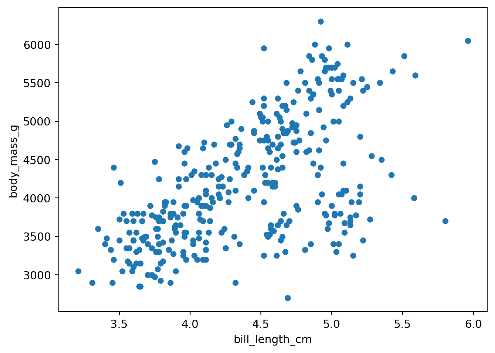
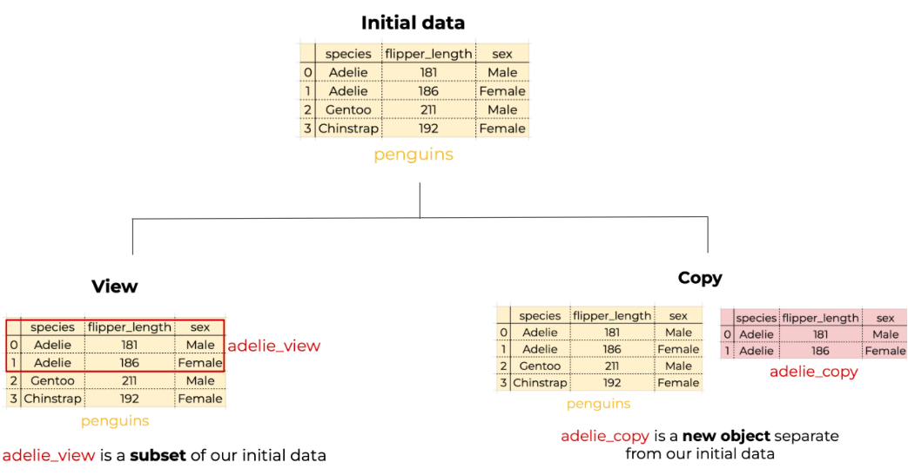
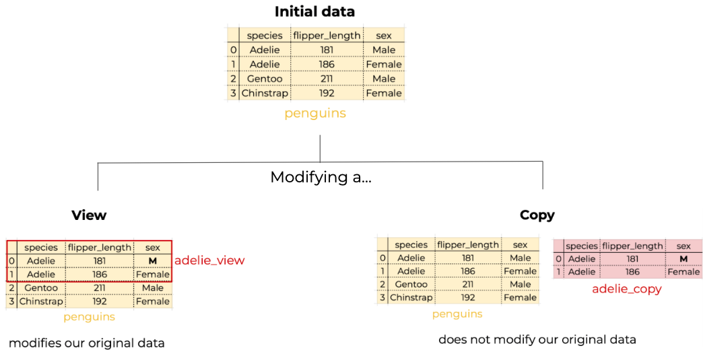

| species | island | bill_length_mm | bill_depth_mm | flipper_length_mm | body_mass_g | sex | year | |
|---|---|---|---|---|---|---|---|---|
| 0 | Adelie | Torgersen | 39.1 | 18.7 | 181.0 | 3750.0 | male | 2007 |
| 1 | Adelie | Torgersen | 39.5 | 17.4 | 186.0 | 3800.0 | female | 2007 |
| 2 | Adelie | Torgersen | 40.3 | 18.0 | 195.0 | 3250.0 | female | 2007 |
| 3 | Adelie | Torgersen | NaN | NaN | NaN | NaN | NaN | 2007 |
| 4 | Adelie | Torgersen | 36.7 | 19.3 | 193.0 | 3450.0 | female | 2007 |
Adding a single column…
4 Updating data frames
In this lesson we will introduce methods for updating a pandas.DataFrame, these include adding and removing columns and updating specific values.
About the data
For this section we will use the Palmer Penguins dataset [1] developed by Drs. Allison Horst, Alison Hill and Kristen Gorman. This dataset contains size measurements for three penguin species in the Palmer Archipelago, Antarctica during 2007, 2008, and 2009.

The dataset has 344 rows and 8 columns. We can see the head of the dataset below:
Let us start by importing the packages we will use in this lesson and loading the data:
import numpy as np
import pandas as pd
import random # Used for randomly sampling integers
# Set the seed
random.seed(42)
# Import data
URL = 'https://raw.githubusercontent.com/allisonhorst/palmerpenguins/main/inst/extdata/penguins.csv'
penguins = pd.read_csv(URL)… using dictionary-like syntax
The simplest syntax to add a new column to a pandas.DataFrame is
df['new_col_name'] = new_column_valueswhere the new_column_values could be:
- a
pandas.Seriesor anumpy.arrayof the same length as the data frame, or - a single scalar.
If the column name exists, the existing column will be updated.
Remember a pandas.DataFrame can be seen as a dictionary of its columns. This syntax for adding a new column to a pandas.DataFrame is the same as adding a new key-value pair to a dictionary:
# Add a new key-value pair to a dictionary
dict[new_key] = new_valueExample
We want to create a new column where the body mass is in kilograms instead of grams, then we need to divide each value in the body_mass_g by 1000.
# Add new column body_mass_kg
penguins['body_mass_kg'] = penguins['body_mass_g']/1000
# Confirm the new column is in the data frame
print("body_mass_kg is in the data frame's columns: ", 'body_mass_kg' in penguins.columns)
# Look at the new column
penguins.head()body_mass_kg is in the data frame's columns: True| species | island | bill_length_mm | bill_depth_mm | flipper_length_mm | body_mass_g | sex | year | body_mass_kg | |
|---|---|---|---|---|---|---|---|---|---|
| 0 | Adelie | Torgersen | 39.1 | 18.7 | 181.0 | 3750.0 | male | 2007 | 3.75 |
| 1 | Adelie | Torgersen | 39.5 | 17.4 | 186.0 | 3800.0 | female | 2007 | 3.80 |
| 2 | Adelie | Torgersen | 40.3 | 18.0 | 195.0 | 3250.0 | female | 2007 | 3.25 |
| 3 | Adelie | Torgersen | NaN | NaN | NaN | NaN | NaN | 2007 | NaN |
| 4 | Adelie | Torgersen | 36.7 | 19.3 | 193.0 | 3450.0 | female | 2007 | 3.45 |
…using the assign() method
We can also create or update an existing column using the assign() method for pandas.DataFrames. The general syntax is:
df = df.assign(new_col_name=new_column_values)Notice the new column names are not strings, we declare them as if we were creating variables.
This way of creating a new column, unlike the dictionary-like syntax, does not modify the data frame in-place. This can be useful for chaining operations:
(penguins.assign(bill_length_cm=penguins.bill_length_mm/10)
.plot(kind='scatter',
x='bill_length_cm',
y='body_mass_g')
)
…at a specific location
The new column was added by default at the end of the data frame. If we want to create a new column and insert it at a particular position we can use the data frame method insert():
df.insert(loc=integer_index, # Location of new column
column='new_col_name',
value=new_col_values)Example
Let’s give each penguin observation a unique identifier as a three digit number and add this column at the beginning of the data frame.
# Create random 3-digit codes
codes = random.sample(range(100,1000), len(penguins)) # Sampling w/o replacement
# Insert codes at the front of data frame
penguins.insert(loc=0, # Index
column='id_code',
value=codes)
penguins.head()| id_code | species | island | bill_length_mm | bill_depth_mm | flipper_length_mm | body_mass_g | sex | year | body_mass_kg | |
|---|---|---|---|---|---|---|---|---|---|---|
| 0 | 754 | Adelie | Torgersen | 39.1 | 18.7 | 181.0 | 3750.0 | male | 2007 | 3.75 |
| 1 | 214 | Adelie | Torgersen | 39.5 | 17.4 | 186.0 | 3800.0 | female | 2007 | 3.80 |
| 2 | 125 | Adelie | Torgersen | 40.3 | 18.0 | 195.0 | 3250.0 | female | 2007 | 3.25 |
| 3 | 859 | Adelie | Torgersen | NaN | NaN | NaN | NaN | NaN | 2007 | NaN |
| 4 | 381 | Adelie | Torgersen | 36.7 | 19.3 | 193.0 | 3450.0 | female | 2007 | 3.45 |
Adding multiple columns
We can also use the assign() method to create or update multiple columns in the same call. The general syntax is:
df = df.assign(new_col1_name=new_col1_values,
new_col2_name=new_col2_values)Remember this method does not modify the data frame, so you will need to reassign the output to the original data frame to update it.
Example
Suppose we want to add these new columns:
- flipper length converted from mm to cm, and
- a code representing the observer.
We can add these columns to penguins using assign():
# Create columns with observer codes and flipper length in cm
penguins = penguins.assign(flipper_length_cm=penguins.flipper_length_mm/10,
observer=random.choices(['A','B','C'], # Sample with replacement
k=len(penguins))
)
# Examine result
penguins.head()| id_code | species | island | bill_length_mm | bill_depth_mm | flipper_length_mm | body_mass_g | sex | year | body_mass_kg | flipper_length_cm | observer | |
|---|---|---|---|---|---|---|---|---|---|---|---|---|
| 0 | 754 | Adelie | Torgersen | 39.1 | 18.7 | 181.0 | 3750.0 | male | 2007 | 3.75 | 18.1 | C |
| 1 | 214 | Adelie | Torgersen | 39.5 | 17.4 | 186.0 | 3800.0 | female | 2007 | 3.80 | 18.6 | A |
| 2 | 125 | Adelie | Torgersen | 40.3 | 18.0 | 195.0 | 3250.0 | female | 2007 | 3.25 | 19.5 | C |
| 3 | 859 | Adelie | Torgersen | NaN | NaN | NaN | NaN | NaN | 2007 | NaN | NaN | A |
| 4 | 381 | Adelie | Torgersen | 36.7 | 19.3 | 193.0 | 3450.0 | female | 2007 | 3.45 | 19.3 | B |
Removing columns
We can remove columns using the drop() method for pandas.Data.Frames, the syntax is:
df = df.drop(columns=col_names)where col_names can be a single column name (string) or a list of column names. Notice again that the drop() method does not modify the data frame in place, so you need to reassign the output.
Example
Now that we updated the units for flipper length and body mass, it makes sense to remove the previous columns to avoid duplicate information. We can do this using drop():
# Remove duplicate length and mass measurements
penguins = penguins.drop(columns=['flipper_length_mm','body_mass_g'])
# Confirm result
print(penguins.columns)Index(['id_code', 'species', 'island', 'bill_length_mm', 'bill_depth_mm',
'sex', 'year', 'body_mass_kg', 'flipper_length_cm', 'observer'],
dtype='object')Updating values
Sometimes we want to update a specific value in our data frame. We’ll review some methods and best practices to do that in this section.
A single value
We can access a single value in a pandas.DataFrame using the locators
The syntax for at[] is:
df.at[single_index_value, 'column_name']Think of at[] as the equivalent to loc[] when trying to access a single value.
Example
For this example, let’s first update the index of the data frame to be the id_code column:
penguins = penguins.set_index('id_code')
penguins| species | island | bill_length_mm | bill_depth_mm | sex | year | body_mass_kg | flipper_length_cm | observer | |
|---|---|---|---|---|---|---|---|---|---|
| id_code | |||||||||
| 754 | Adelie | Torgersen | 39.1 | 18.7 | male | 2007 | 3.750 | 18.1 | C |
| 214 | Adelie | Torgersen | 39.5 | 17.4 | female | 2007 | 3.800 | 18.6 | A |
| 125 | Adelie | Torgersen | 40.3 | 18.0 | female | 2007 | 3.250 | 19.5 | C |
| 859 | Adelie | Torgersen | NaN | NaN | NaN | 2007 | NaN | NaN | A |
| 381 | Adelie | Torgersen | 36.7 | 19.3 | female | 2007 | 3.450 | 19.3 | B |
| ... | ... | ... | ... | ... | ... | ... | ... | ... | ... |
| 140 | Chinstrap | Dream | 55.8 | 19.8 | male | 2009 | 4.000 | 20.7 | C |
| 183 | Chinstrap | Dream | 43.5 | 18.1 | female | 2009 | 3.400 | 20.2 | A |
| 969 | Chinstrap | Dream | 49.6 | 18.2 | male | 2009 | 3.775 | 19.3 | C |
| 635 | Chinstrap | Dream | 50.8 | 19.0 | male | 2009 | 4.100 | 21.0 | A |
| 883 | Chinstrap | Dream | 50.2 | 18.7 | female | 2009 | 3.775 | 19.8 | B |
344 rows × 9 columns
If we want to know what was the bill length of the penguin which has ID number 859, we can directly access that information using at[]:
# Check bill length of penguin with ID 859
penguins.at[859, 'bill_length_mm']nanWe get this bill length is an NA. Maybe we want to update it to 38.3 mm. We can do this with at[] too:
# Correct bill length value of penguin with ID 859
penguins.at[859,'bill_length_mm'] = 38.3
# Confirm value was updated
penguins.loc[859]species Adelie
island Torgersen
bill_length_mm 38.3
bill_depth_mm NaN
sex NaN
year 2007
body_mass_kg NaN
flipper_length_cm NaN
observer A
Name: 859, dtype: objectIf we want to access or update a single value by position we use the iat[] locator. The syntax for iat[] is:
df.iat[index_integer_location, column_integer_location]This is the same way you would index entries in a matrix. You may find it useful to think of iat[] as the equivalent of iloc[] to access a single value in the data frame.
Obtaining the location of a specific column within the column list can be prone to error if we do it ‘by hand’. If we need to obtain this index, we can dynamically get the location this way:
penguins.columns.get_loc('column_name')
Check-in
Obtain the location of the
bill_length_mmcolumn.Use
iat[]to access the same bill length value for the penguin with ID 859 and revert it back to an NA. Confirm your update usingiloc[].
Multiple values in a column
What if we want to update multiple values in a column? We’ll cover two cases: with a condition on the column values and by selecting a few values to update.
Using a condition
Often, we need to create a new column where the new values depend on conditions on another column.
Example
We want to classify the Palmer penguins such that :
- penguins with body mass less than 3kg as small,
- penguins with body mass greater or equal than 3 kg but less than 5 kg as medium,
- and those with body mass greater or equal than 5 kg as large.
One way to add this information in a new column is using the numpy.select() function:
# Create a list with the conditions
conditions = [penguins.body_mass_kg < 3,
(3 <= penguins.body_mass_kg) & (penguins.body_mass_kg < 5),
5 <= penguins.body_mass_kg]
# Create a list with the choices
choices = ["small",
"medium",
"large"]
# Add the selections using np.select
penguins['size'] = np.select(conditions,
choices,
default=np.nan) # Value for anything outside conditions
# Display the updated data frame to confirm the new column
penguins.head()| species | island | bill_length_mm | bill_depth_mm | sex | year | body_mass_kg | flipper_length_cm | observer | size | |
|---|---|---|---|---|---|---|---|---|---|---|
| id_code | ||||||||||
| 754 | Adelie | Torgersen | 39.1 | 18.7 | male | 2007 | 3.75 | 18.1 | C | medium |
| 214 | Adelie | Torgersen | 39.5 | 17.4 | female | 2007 | 3.80 | 18.6 | A | medium |
| 125 | Adelie | Torgersen | 40.3 | 18.0 | female | 2007 | 3.25 | 19.5 | C | medium |
| 859 | Adelie | Torgersen | NaN | NaN | NaN | 2007 | NaN | NaN | A | nan |
| 381 | Adelie | Torgersen | 36.7 | 19.3 | female | 2007 | 3.45 | 19.3 | B | medium |
By selecting values
When we only want to update some values in a column we can do this by selecting this data using loc (if selecting by labels) or iloc (if selecting by position). The general syntax for updating data with loc is:
df.loc[row_selection, column_name] = new_valueswhere
row_selectionis the rows we want to update, this can be any expression that gives us a booleanpandas.Series,col_nameis a single column name, andnew_valuesis the new value or values we want. If using multiple values, thennew_valuesmust be of the same length as the number of rows selected.
Using loc[] in assignment modifies the data frame directly without the need for reassignment.
Example
We want to update the “male” values in the sex column to “M”.
# Select rows with sex=male and simplify values in 'sex' column
penguins.loc[penguins.sex=='male', 'sex'] = 'M'
# Check changes in 'sex' column specifically
print(penguins['sex'].unique())['M' 'female' nan]Best practices
Suppose we want to similarly update the “female” values in the sex column to “F”. This is an example of another way we might try to do it:
# Select rows where 'sex' is 'female' and then attempt to update 'sex' column values
penguins[penguins.sex=='female']['sex'] = 'F' # This raises SettingWithCopyWarning/var/folders/gm/chd1kps96_g7xdxyfw150wm80000gp/T/ipykernel_7781/534867616.py:2: SettingWithCopyWarning:
A value is trying to be set on a copy of a slice from a DataFrame.
Try using .loc[row_indexer,col_indexer] = value instead
See the caveats in the documentation: https://pandas.pydata.org/pandas-docs/stable/user_guide/indexing.html#returning-a-view-versus-a-copy
penguins[penguins.sex=='female']['sex'] = 'F' # This raises SettingWithCopyWarningWhen we select the data we want to update using chained indexing (two selection brackets [][]) instead of loc[] we get a SettingWithCopyWarning. With this warning, pandas is trying to alert us to a potential bug. In this case, the bug is that we actually did not update our data frame:
# Confirm values were updated
print(penguins['sex'].unique())['M' 'female' nan]
Avoid chained indexing
[][] and use .loc[]
The SettingWithCopyWarning often arises from chained indexing:
df[df['col'] == value]['col2'] = new_valueIn the words of the pandas documentation:
assigning to the product of chained indexing has inherently unpredictable results.
The best practice is to use .loc[] instead:
df.loc[df['col'] == value,'col2'] = new_value.loc[] is generally more readable and explicitly modifies the original data frame.
Warnings in Python are intended to be helpful and can prevent unintended data modification errors!
Check-in
Update the “female” values in the penguins data frame to “F”. Don’t use chained indexing. Confirm that the values in the column were updated.
To understand why the SettingWithCopyWarning pops up we need to understand that some pandas operations return a view to your data, while others return a copy of your data.
Views are actual subsets of the original data, when we update them, we are modifying the original data frame.
Copies are unique objects, independent of our original data frames. When we update a copy we are not modifying the original data frame.

Depending on what we are trying to do we might want to modify the original data frame or we might want to modify a copy.

Pandas raises the SettingWithCopyWarning because it tries to balance memory efficiency with data integrity. By default, it avoids creating unnecessary copies, but sometimes it’s ambiguous whether a subset should be independent (a copy) or connected (a view).
Example
We only want to use data from Biscoe island and, after doing some analyses, we want to add a new column to it:
# Select penguins from Biscoe island
biscoe = penguins[penguins.island=='Biscoe']
# ... Other analyses ...
# Add a column
biscoe['sample_col'] = 100 # This raises SettingWithCopyWarning/var/folders/gm/chd1kps96_g7xdxyfw150wm80000gp/T/ipykernel_7781/844154415.py:7: SettingWithCopyWarning:
A value is trying to be set on a copy of a slice from a DataFrame.
Try using .loc[row_indexer,col_indexer] = value instead
See the caveats in the documentation: https://pandas.pydata.org/pandas-docs/stable/user_guide/indexing.html#returning-a-view-versus-a-copy
biscoe['sample_col'] = 100 # This raises SettingWithCopyWarningpandas is trying to alert you that it is unsure about whether biscoe is a view or a copy and it’s unclear whether an of our code will modify our dataset or not.
To fix this we can take control of the copy-view situation and explicitly ask for a copy of the dataset when subsetting the data. Use the copy() method to do this:
# Make sure you get an independent data frame that won't alter the original
biscoe = penguins[penguins.island=='Biscoe'].copy()
# Add a column, no warning
biscoe['sample_col'] = 100Now we are sure we did not modify our initial data, but rather the biscoe data frame:
# Confirm the new column is in our subset data
biscoe.head()| species | island | bill_length_mm | bill_depth_mm | sex | year | body_mass_kg | flipper_length_cm | observer | size | sample_col | |
|---|---|---|---|---|---|---|---|---|---|---|---|
| id_code | |||||||||||
| 338 | Adelie | Biscoe | 37.8 | 18.3 | F | 2007 | 3.40 | 17.4 | A | medium | 100 |
| 617 | Adelie | Biscoe | 37.7 | 18.7 | M | 2007 | 3.60 | 18.0 | C | medium | 100 |
| 716 | Adelie | Biscoe | 35.9 | 19.2 | F | 2007 | 3.80 | 18.9 | C | medium | 100 |
| 127 | Adelie | Biscoe | 38.2 | 18.1 | M | 2007 | 3.95 | 18.5 | B | medium | 100 |
| 674 | Adelie | Biscoe | 38.8 | 17.2 | M | 2007 | 3.80 | 18.0 | C | medium | 100 |
# Confirm that original data was not modified
print('sample_column' in penguins.columns)FalseThe SettingWithCopyWarning can be tricky, there are also false positives and false negatives. Avoiding chained indexing and making a copy of your data frame subset when needed and possible will save you from the usual pitfalls!
To learn more about the SettingWithCopyWarning, these are some articles that go into more depth:
📖 pandas Documentation - Returning a view versus a copy
📖 Real Python- SettingWithCopyWarning in pandas: Views vs Copies
📖 Dataquest - SettingwithCopyWarning: How to Fix This Warning in Pandas
References
[1]
A. M. Horst, A. P. Hill, and K. B. Gorman, Palmerpenguins: Palmer archipelago (antarctica) penguin data. 2020. Available: https://allisonhorst.github.io/palmerpenguins/